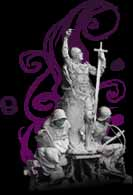

shadows
rise of Loures
Sometimes we barely tell
the difference
between darkness and light
Do we have faith
in what we believe?
"it won't rain all the time"
The kings' magic power and armies came from ancient civilizations, and the territories they founded their kingdoms upon. No one wanted to give up their territory. Ainmeal gathered with three kings to found the new capital, Loures on the great plain: Ardmagh. Tenes, the ruler of the city, and his allies went to war. His notable allies were: Suomi, Massai, Feasgar, and Glaic. Allies dominated the beginning of the war. Ainmeal, however, did not back down. Ainmeal divided the allies against each other. Then Suomi joined Ainmeal's forces, ending the war. Now Loures ruled the empire, and Ainmeal was King of Ardmagh.
Originally, Ainmeal renamed Loures, to erase the memory of it's previous reign, but it soon regained it's older name when he left the throne to his son. Loures had achieved its might and craftsmanship from the artisans that had worked under Tenes, not Ainmeal. When Ainmeal's son died, a shaman-empress was elected. This lineage was a puppet to the spirit that had existed before Ainmeal.
'Twas not till the fourth empress, Ealagad, the "Steel Swan," took power. She gathered the other nine kings. She was stronger than the dubhaimid. The dubhaimid dreamt of resurrection. It created many hideous monsters; which sought the ancient civilization: Aosda.
Seven beings led the spirits of Aosda to Temuair. These beings were determined to protect mortals. Thus they began the 100 years war against Darkness, for the sake of the light, and to complete the unfinished empire. It was the Shadows War.
Those united under Ealagad suffered defeat in the form of plagues of madness until magicians of Rucesion discovered the sixth element: light. The creatures of darkness, the dubhaimid, were defeated after another generation of war. Rich towns filled their streets with lamps containing a tear of this element to keep the darkness at bay.
Yet, every light casts a shadow. ...
(Excerpted from
Seanchas Temuair, Vol. 1,
in the Library of Loures)

table of contents | next section